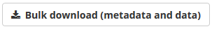

This guide is intended to capture download to a desktop workstation. Please note, the download.sh file described in step 12 below can be used for direct download of portal data to a high performance computing (HPC) environment.

package_metadata/resource_metadata/tmp/download.ps1download.shREADME.txtREADME.txt provides instructions for data download: PLEASE READ THIS!
package_metadata contains a spreadsheet file with the metadata relevant to the downloaded filtered data set
resource_metada contains a spreadsheet file with the metadata relevant to the files which comprise the filtered data set
The tmp/ folder contains:
*_md5sum.txt, where the * indicates the name of the downloaded data package*_urls.txt, where the * indicates the urls for each data set in the downloaded packagedownload.ps1 and download.sh are shell scriptsdownload.ps1: Windows PowerShell script (see below), which when executed will download the files, and then checksum them. This is supported on a Microsoft system, and uses only PowerShell.#!/usr/bin/env pwsh
$apikey = $Env:CKAN_API_KEY
if (!$apikey) {
'Please set the CKAN_API_KEY environment variable.'
''
'You can find your API Key by browsing to:'
'https://data.bioplatforms.com//user/[USERNAME]'
''
'The API key has the format:'
'xxxxxxxx-xxxx-xxxx-xxxx-xxxxxxxxxxxx'
''
'To set the environment variable in Linux/MacOS/Unix, use:'
'export CKAN_API_KEY=xxxxxxxx-xxxx-xxxx-xxxx-xxxxxxxxxxxx'
''
'On Microsoft Windows, within Powershell, use:'
'$env:CKAN_API_KEY=xxxxxxxx-xxxx-xxxx-xxxx-xxxxxxxxxxxx'
exit 1
}
#
# This PowerShell script was automatically generated.
#
function DownloadURL($url)
{
$filename = $url.Substring($url.lastIndexOf('/') + 1)
if (Test-Path $filename) {
"File already exists, skipping download: " + $filename
return
}
$client = new-object System.Net.WebClient
if ($apikey) {
$client.Headers.Add('Authorization: ' + $apikey)
}
"Downloading: " + $filename
$client.DownloadFile($url, $filename)
}
function VerifyMD5([String]$filename, [String]$expected_md5)
{
$md5hash = new-object -TypeName System.Security.Cryptography.MD5CryptoServiceProvider
try {
$actual_md5 = [System.BitConverter]::ToString($md5hash.ComputeHash([System.IO.File]::ReadAllBytes($filename))).Replace('-', '').toLower();
} catch [System.IO.FileNotFoundException] {
$filename + ": FAILED open or read"
return
}
if ($actual_md5 -eq $expected_md5) {
$filename + ": OK"
} else {
$filename + ": FAILED"
}
}
'Commencing bulk download of data from CKAN:'
''
$urls = Get-Content 'tmp/[DATA PACKAGE NAME]_urls.txt'
ForEach ($line in $urls) {
DownloadURL $line
}
'File downloads complete.'
''
'Verifying file checksums:'
''
$md5s = Get-Content 'tmp/[DATA PACKAGE NAME]_md5sum.txt'
ForEach ($line in $md5s) {
$md5, $filename = $line.Split(" ",[StringSplitOptions]'RemoveEmptyEntries')
VerifyMD5 $filename $md5
}download.sh: UNIX shell script (see below), which when executed will download the files, and then checksum them. This is supported on any Linux or MacOS/BSD system, so long as curl is installed.#!/bin/sh
#
# This UNIX shell script was automatically generated.
#
if [ x"$CKAN_API_KEY" = "x" ]; then
echo "Please set the CKAN_API_KEY environment variable."
echo
echo "You can find your API Key by browsing to:"
echo "https://data.bioplatforms.com//user/[USERNAME]"
echo
echo "The API key has the format:"
echo "xxxxxxxx-xxxx-xxxx-xxxx-xxxxxxxxxxxx"
echo
echo "To set the environment variable in Linux/MacOS/Unix, use:"
echo "export CKAN_API_KEY=xxxxxxxx-xxxx-xxxx-xxxx-xxxxxxxxxxxx"
echo ""
exit 1
fi
if ! which curl >/dev/null 2>&1; then
echo "`curl` is not installed. Please install it."
echo
echo "On MacOS, it can be installed via HomeBrew (https://brew.sh/)"
echo "using the command `brew install curl`"
exit 1
fi
if ! which md5sum >/dev/null 2>&1; then
echo "`md5sum` is not installed. Please install it."
echo
echo "On MacOS, it can be installed via HomeBrew (https://brew.sh/)"
echo "using the command `brew install md5sha1sum`"
exit 1
fi
echo "Downloading data"
while read URL; do
echo "Downloading: $URL"
curl -O -L -C - -H "Authorization: $CKAN_API_KEY" "$URL"
done < tmp/[DATA PACKAGE NAME]_urls.txt
echo "Data download complete. Verifying checksums:"
md5sum -c tmp/[DATA PACKAGE NAME]_md5sum.txt 2>&1 | tee tmp/md5sum.logdownload.sh or download.ps1, it will provide instructions to set up your API keydownloads.sh or downloads.ps1 againcurl --version to check.which curl to check.The Bioplatforms Data Portal is based upon CKAN, an open source platform for sharing metadata and data. CKAN provides Application Programming Interfaces (APIs) which allow computer software to interact with the portal. It is possible for software to programmatically do everything you can do manually by using the portal in your web browser - including searching for data, downloading data, and even uploading data.
This guide covers access to the portal using the R and Python programming languages, and via the command shell on your desktop computer (bash or zsh.)
When your computer program connects to the portal, it must identify itself. It will do this by sending an ‘API key’. You can find this key on the portal.
Go to the portal https://data.bioplatforms.com/
At the top right of the page, you will see either a prompt to log in, or your name
Log in, if required, and then click on your name
Your API key will be visible in the sidebar
If you are downloading or uploading large datasets from the portal, it is highly recommended that you do this from an appropriate environment, with a fast and reliable connection to the internet. Many institutions provide access to HPC nodes.
You will need access to an R installation, either on your computer or on a HPC node.
Launch R, and
Install the ckanr bindings for CKAN:
> install.packages("devtools")
> library("devtools")
> install_github("ropensci/ckanr")You will need access to a Python installation, either on your computer or on a HPC node. Note: Python is installed by default on MacOS and most Linux systems. The examples given here are for Python version 3.7 or higher.
Use pip to install the ckanapi extension and the requests extension:
$ pip install ckanapi
$ pip install requestsYou will need curl installed. Note: Curl is installed by default on MacOS and most Linux systems. For Windows, you can easily install it using the Windows Subsystem for Linux, or chocolatey.
You will also need jq installed - it is including in most Linux distributions, and is available via homebrew on MacOS.
CKAN makes it possible to query datasets and resources programmatically.
This may be of use when:
It is helpful to be aware of two key concepts which the Data Portal uses:
Packages: a package is a collection of zero or more resources. It is effectively a flat folder, with metadata.
Resources: a resource is a file, with its associated metadata, including its type and size
The following sections contain example code snippets demonstrating how to search for all ‘amplicon’ data from the Australian Microbiome Framework Initiative. The Bioplatforms Australia Data Portal allows up to 50,000 search results to be returned at a time. The results returned will contain the package and resource metadata for each ‘amplicon’ dataset.
The list of all data types, and their associated schemas, are in the ckanext-bpatheme repository on Github. Each data type has a JSON schema file in that directory. Make sure to change to delimiter from _ (underscore) to - (hyphen) prior to trying a programmatic search.
import ckanapi
remote = ckanapi.RemoteCKAN('https://data.bioplatforms.com', apikey='xx-xx-xx-xx-xx')
# we increase the number of rows to be returned, and we
# ask for all packages, including private packages
result = remote.action.package_search(
q='type:amdb-genomics-amplicon',
rows=50000,
include_private=True)
print("{} matches found.".format(result['count']))library(ckanr)
key="xx-xx-xx-xx-xx"
ckanr_setup(url="https://data.bioplatforms.com", key=key)
x <- package_search(q='type:amdb-genomics-amplicon', rows=50000, include_private=TRUE)
print(x$count)export CKAN_API_KEY="xx-xx-xx-xx-xx"
curl -H "Authorization: "$CKAN_API_KEY" 'https://data.bioplatforms.com/api/3/action/package_search?q=type:amdb-genomics-amplicon&rows=50000&include_private=true'Once you have identified the packages containing the data you wish to download, it is possible to programmatically download this data. You may also wish to save the associated metadata for use in your analysis.
The following examples extend the search functionality above to download and save data files.
import ckanapi
remote = ckanapi.RemoteCKAN('https://data.bioplatforms.com', apikey='xx-xx-xx-xx-xx')
# we increase the number of rows to be returned, and we
# ask for all packages, including private packages
result = remote.action.package_search(
q='type:amdb-genomics-amplicon',
rows=50000,
include_private=True)
print("{} matches found.".format(result['count']))
# iterate through the resulting packages, downloading them one by one
import requests
for package in result['results']:
for resource in package['resources']:
url = resource['url']
resp = requests.get(resource['url'], headers={'Authorization': remote.apikey})
with open(resource['name'], 'wu') as fd:
fd.write(resp.content)library(ckanr)
key="xx-xx-xx-xx-xx"
ckanr_setup(url="https://data.bioplatforms.com", key=key)
x <- package_search(q='type:amdb-genomics-amplicon', rows=50000, include_private=TRUE)
headers <- (key)
names(headers) <- c('Authorization')
for (package in x$results) {
for (resource in package$resources) {
print(resource$url)
download.file(resource$url, resource$name, headers=headers)
}
}We ‘pipe’ the response received from the Data Portal into jq, a command-line tool which allows us to easily parse JSON data.
export CKAN_API_KEY="xx-xx-xx-xx-xx"
for URL in $( curl -H "Authorization: $CKAN_API_KEY" 'https://data.bioplatforms.com/api/3/action/package_search?q=type:amdb-genomics-amplicon&rows=50000&include_private=true' | jq -r '.result .results [] .resources [] .url'); do
# download the file using curl
echo "downloading: $URL"
curl -O -L -C - -H "Authorization: $CKAN_API_KEY" "$URL"
doneYou can also use jq to generate an MD5 checksum file, which can be used to verify the downloaded data.
export CKAN_API_KEY="xx-xx-xx-xx-xx"
curl -H "Authorization: $CKAN_API_KEY" 'https://data.bioplatforms.com/api/3/action/package_search?q=type:amdb-genomics-amplicon&rows=50000&include_private=true' | jq -r '.result .results [] .resources [] | "\(.md5) \(.name)"' > checksums.md5
# check downloaded data
md5sum -c checksums.md5If you wish to download data directly from your cloud or HPC environment, you can copy the bulk download Zip archive, described in the find, filter, download guide, to that system, extract it, and run the download (download.sh) from there. This means you will have access to the reliable, high-speed connection to the internet provided by that environment, as well as any attached storage resources.
Once you are set up for programmatic access, it is build more advanced integrations with the portal. As examples, you could:
The example below (in Python) explores some of those possibilites, building on the snippets above.
import ckanapi
import datetime
import os
remote = ckanapi.RemoteCKAN('https://data.bioplatforms.com', apikey='xx-xx-xx-xx-xx')
# we increase the number of rows to be returned, and we
# ask for all packages, including private packages
result = remote.action.package_search(
q='type:amdb-genomics-amplicon',
rows=50000,
include_private=True)
print("{} matches found.".format(result['count']))
# iterate through the resulting packages, downloading them one by one
import requests
for package in result['results']:
# filter the results based on the date they were sampled
date_sampled = datetime.datetime.strptime(package['date_sampled'], '%Y-%m-%d').date()
# if the sample is less than 90 days old, excluded it
if (datetime.date.today() - date_sampled).days < 90:
continue
for resource in package['resources']:
target = resource['name']
# do we already have the file? if so, skip the download
if os.access(target, os.R_OK):
continue
url = resource['url']
resp = requests.get(resource['url'], headers={'Authorization': remote.apikey})
with open(target, 'wu') as fd:
fd.write(resp.content)